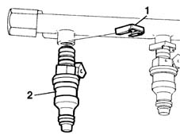

1058A70 injector(1) of cng injection system - r rwith cng manifold pipe removed includes gasket replacement
- Path
- Procedures > 10 ENGINE UNIT > 1058 GAS CIRCUIT > 1058A GAS CIRCUIT MULTI POINT INJECTION > 1058A70 injector(1) of cng injection system - r rwith cng manifold pipe removed includes gasket replacement
- Kind
- repair procedure (removal / refitting; the operation number is the code)
- Applies to
- engines: 1.6 16v; all production periods; only with equipment: BIPOWER and BLUPOWER
- Interactive page
- https://sloeber94.github.io/elrnDB-fMltpl/en/#/2891485
Applies to: engines: 1.6 16v; all production periods; only with equipment: BIPOWER and BLUPOWER
 Removing
Removing
 Refitting
Refitting1. Remove the safety clip.
2. Remove the press-fitted injector

Applies to: engines: 1.6 16v; all production periods; only with equipment: BIPOWER and BLUPOWER
Refitting
RemovingReplace the seals before refitting.
Fit the injector into its seat on the manifold.
Fit the retaining clip.
Connect the electrical connection.